Simple system tutorial
In this tutorial you build a simple energy system from scratch with Spine Toolbox and run it with SpineOpt. Spine Toolbox is used to create a workflow with databases and tools, and SpineOpt is the tool that optimises the energy system. The later tutorials build on this one.
If you haven't installed the tools yet, follow the Spine Toolbox installation guide and the SpineOpt installation guide.
Overview
In this tutorial we will:
- create a workflow with an input database, SpineOpt and an output database,
- prepare the input database with the SpineOpt templates,
- add the nodes and units of the system and the flows between them,
- enter the parameter values,
- and run the workflow and check the results.
About the simple system
- Two power plants take fuel from a source node and release electricity to another node in order to supply a demand.
- Power plant 'a' has a capacity of 100 MW, a variable operating cost of 25 euro/fuel unit, and generates 0.7 MWh of electricity per unit of fuel.
- Power plant 'b' has a capacity of 200 MW, a variable operating cost of 50 euro/fuel unit, and generates 0.8 MWh of electricity per unit of fuel.
- The demand at the electricity node is 150 MW.
- The fuel node is able to provide infinite energy.
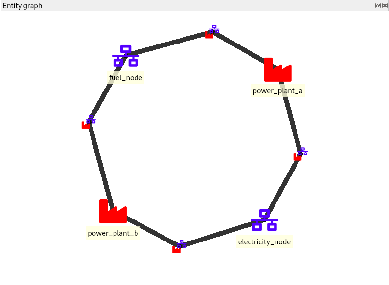
Spine Toolbox workflow
The workflow is a SpineOpt tool that reads data from an input database, optimises the system and writes the results to an output database.
Drag two Data Store items and a Run SpineOpt tool from the toolbar to the Design View, and name the Data Stores
inputandoutput.The Data Store is in the Main section of the toolbar. Run SpineOpt comes from the SpineOpt plugin and is in the SpineOpt section. If the window is narrow, that section may be hidden at the right end of the toolbar: click the arrow there or widen the window. If you don't see it at all, install the plugin first (Plugins > Install plugin..., see Installation).
Select each Data Store, select the dialect sqlite in its properties panel and press New Spine db.
Connect
inputto Run SpineOpt and Run SpineOpt tooutputby dragging arrows between the items.The arrows only make the databases available to the tool. In the properties panel of Run SpineOpt, drag the databases to the Tool arguments, first the input and then the output:
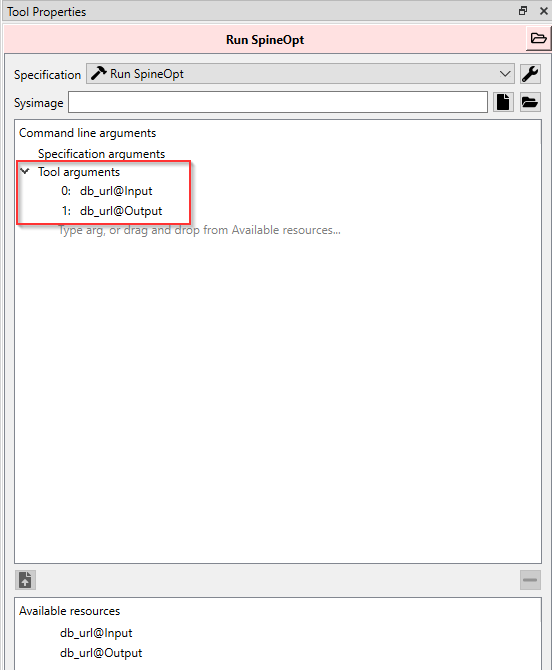
The result should look similar to this. The Load template tool in the picture is another way to load the SpineOpt template; we don't need it here.
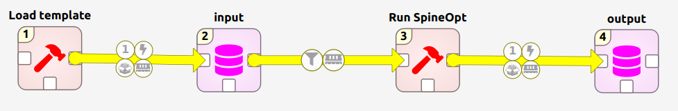
Entering input data
We enter the data with the Spine DB editor. Double-click the input Data Store to open it.
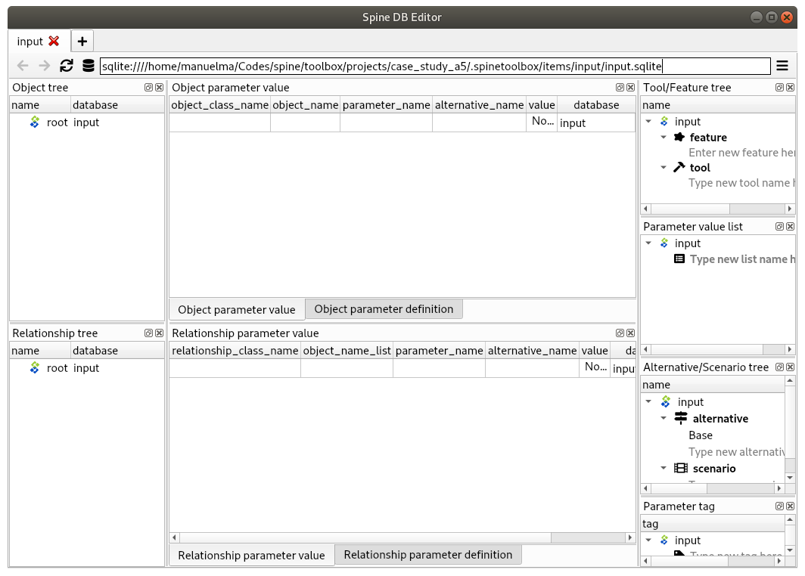
How the editor works in the steps below:
- Entities (nodes, units, flows, ...) are added in the Entity tree at the top-left: right-click the class, select Add entities... and fill in the dialog.
- Parameter values are entered in the Parameter value table: select the class in the Entity tree and fill in the entity byname, parameter name, alternative and value on the empty row below the filter row. Use the alternative
Base. For values marked (drop-down), double-click the value cell and pick the value from the list. A completed row shows the icon of its class; a row without an icon is incomplete and won't be saved. - Changes are saved only when you press Commit in the toolbar.
- The Graph button in the toolbar shows the entities that you select in the Entity tree as a graph.
Templates and model settings
An empty database doesn't yet know the entity classes and parameters of SpineOpt. We get them from the SpineOpt template. The model settings, i.e. the model, its temporal and stochastic structure and the report, come from a second template.
- Download the SpineOpt database template and the basic SpineOpt model with the Download raw file button at the top right of the file view.
- Select File > Import... and import first
spineopt_template.jsonand thenbasic_model_template.json. The order matters: the basic model can only be imported once the classes of the template exist. You should then see classes like connection, grid and model in the Entity tree. - Press Commit and enter a commit message, e.g. 'Import templates'.
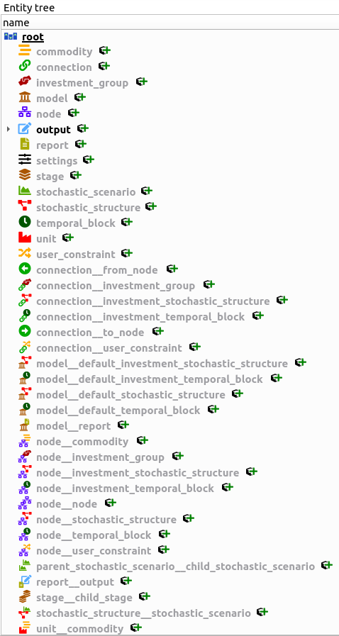
The report determines which variables are written to the output database. It has no outputs yet, so we connect it to the unit_flow variable. The connection is an entity of the report__output class, so it is added in the Entity tree and has no parameter value.
- Right-click the report__output class, select Add entities..., fill in only the report and output columns and press OK:
| report | output |
|---|---|
| report1 | unit_flow |
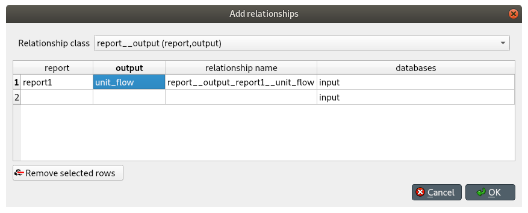
The resulting model settings are shown below (select the model, the stochastic structure and the report in the Entity tree). The realization entity is a scenario, which SpineOpt needs even for a deterministic model; see the Stochastic structure tutorial.
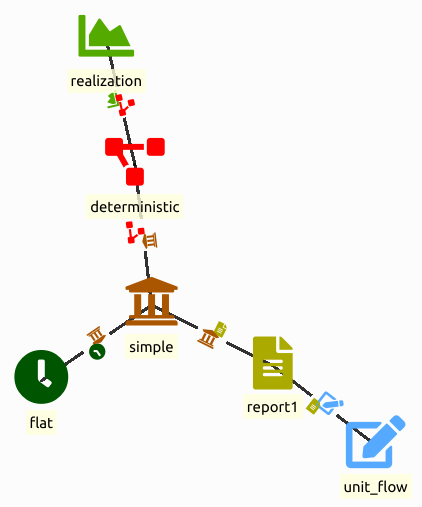
Nodes and units
In SpineOpt, nodes are points where an energy balance takes place, whereas units are energy conversion devices that take energy from nodes and release it to nodes.
- Right-click the node class, select Add entities..., add
fuelandelectricityand press OK.
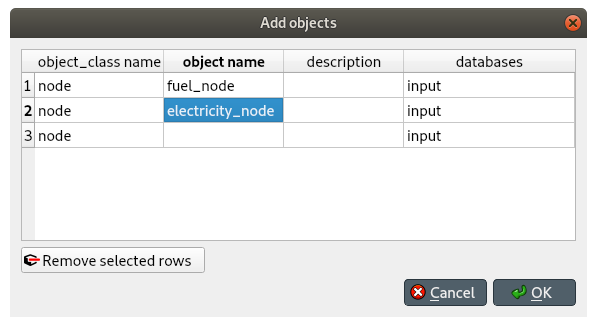
- Add the units
power_plant_aandpower_plant_bto the unit class in the same way.
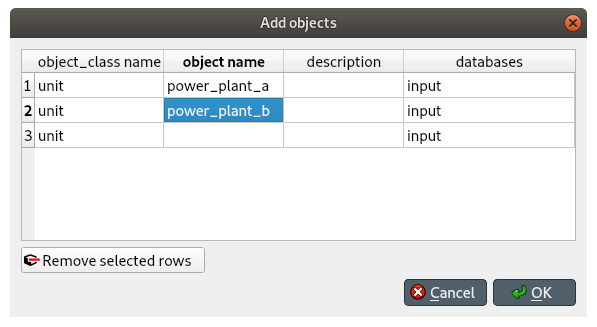
The example file simple_system.json of the Verify installation page contains the same system, with the nodes called fuel_node and electricity_node.
Flows between the nodes and units
Fuel flows from the 'fuel' node to the units, and electricity from the units to the 'electricity' node.
- Add the flows from the 'fuel' node to the units to the node__to_unit class:
| node | unit |
|---|---|
| fuel | power_plant_a |
| fuel | power_plant_b |
- Add the flows from the units to the 'electricity' node to the unit__to_node class:
| unit | node |
|---|---|
| power_plant_a | electricity |
| power_plant_b | electricity |
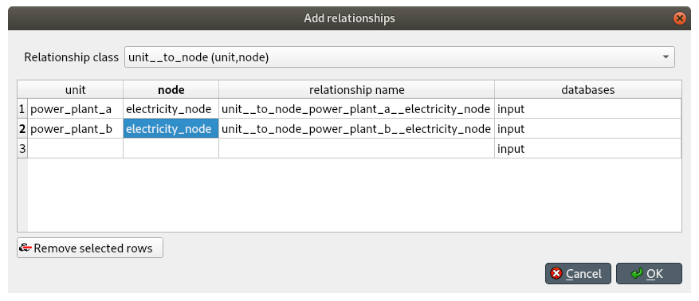
These flows are independent of each other: nothing yet says how much fuel a unit needs for its electricity. That is defined between the input and the output flow of the unit with a unit_flow__unit_flow entity, which later gets the efficiency. Defining the efficiency between flows rather than for the unit allows units with several inputs and outputs, e.g. a CHP plant.
- Add the following entities to the unit_flow__unit_flow class. The dialog has two columns: the first one is the output flow of the unit and the second one its input flow.
| unit_flow (output) | unit_flow (input) |
|---|---|
| power_plant_a ǀ electricity | fuel ǀ power_plant_a |
| power_plant_b ǀ electricity | fuel ǀ power_plant_b |
- Press Commit.
The resulting system is shown below (select the nodes in the Entity tree):
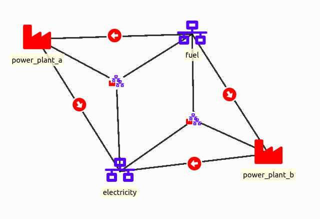
Parameter values
The parameters of the power plants are given for the flows rather than for the units, because a unit can have several inputs and outputs:
| parameter | given for | why |
|---|---|---|
| VOM cost | node__to_unit fuel ǀ power_plant | it is paid for the fuel input |
| capacity | unit__to_node power_plant ǀ electricity | it limits the electricity output |
| efficiency | unit_flow__unit_flow | it is the ratio of the output to the input |
The fuel node gets the balance_type none, so that it doesn't have to balance its flows and can supply any amount of fuel.
- Select the node class and enter:
| group | class | entity byname | parameter name | alternative | value |
|---|---|---|---|---|---|
| node | electricity | demand | Base | 150.0 | |
| node | fuel | balance_type | Base | none (drop-down) |
- Select the node__to_unit class and enter:
| group | class | entity byname | parameter name | alternative | value |
|---|---|---|---|---|---|
| node__to_unit | fuel ǀ power_plant_a | vom_cost | Base | 25.0 | |
| node__to_unit | fuel ǀ power_plant_b | vom_cost | Base | 50.0 |
- Select the unit__to_node class and enter:
| group | class | entity byname | parameter name | alternative | value |
|---|---|---|---|---|---|
| unit__to_node | power_plant_a ǀ electricity | capacity_per_unit | Base | 100.0 | |
| unit__to_node | power_plant_b ǀ electricity | capacity_per_unit | Base | 200.0 |
- Select the unit_flow__unit_flow class and enter:
| group | class | entity byname | parameter name | alternative | value |
|---|---|---|---|---|---|
| unit_flow__unit_flow | power_plant_a ǀ electricity ǀ fuel ǀ power_plant_a | flow_ratio_equality_coefficient | Base | 0.7 | |
| unit_flow__unit_flow | power_plant_b ǀ electricity ǀ fuel ǀ power_plant_b | flow_ratio_equality_coefficient | Base | 0.8 |
The flow_ratio_equality_coefficient is the ratio of the first (output) flow to the second (input) flow. If the flows are the wrong way round, the results are wrong or SpineOpt stops with an error.
- Press Commit.
Select the root in the Entity tree to see all parameter values. Besides the values above, it shows the resolution 1D of the temporal block flat from the basic model template, i.e. the model has one time step of one day.
Executing the workflow
In Spine Toolbox's main window, press Project in the Execute section of the toolbar. The Event log shows the progress, and selecting the Run SpineOpt tool shows the output of SpineOpt in the Julia Console.
Examining the results
- Double-click the
outputData Store to open it in the Spine DB editor. - Press the Index button in the toolbar to show the results in a pivot table.
- In the Entity tree, select
report__unit__node__direction__stochastic_scenario. - Under alternative in the Frozen table, pick the latest run ("Run SpineOpt@..."). Each run is saved as its own alternative.
You should get the following unit_flow results:
| report | unit | node | direction | stochastic_scenario | index | unit_flow |
|---|---|---|---|---|---|---|
| report1 | power_plant_a | electricity | to_node | realization | 2000-01-01T00:00:00 | 100.0 |
| report1 | power_plant_a | fuel | from_node | realization | 2000-01-01T00:00:00 | 142.86 |
| report1 | power_plant_b | electricity | to_node | realization | 2000-01-01T00:00:00 | 50.0 |
| report1 | power_plant_b | fuel | from_node | realization | 2000-01-01T00:00:00 | 62.5 |
The cheaper power_plant_a produces at its full capacity of 100, and power_plant_b covers the rest of the demand of 150. The fuel flows are the electricity flows divided by the efficiencies (100 / 0.7 and 50 / 0.8).